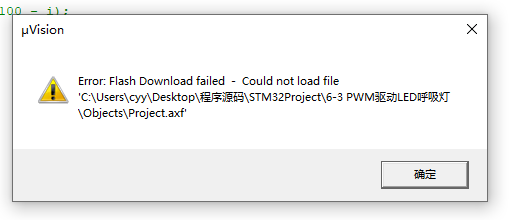
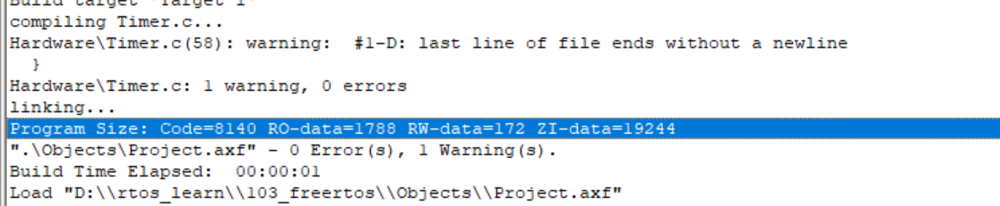

Keil
C99 Mode
这个模式可以不用将变量定义到头部，移植的代码如果报一堆错误往往是这个导致的
位置： Target for Option ->C/C++ -> C99 Mode
Debug
这需要单片机插上jlink使用，点击进入，右键变量，加入Watcher，即可看见其在程序中发生的变化
JLINK
实际也是个103，后续在电脑上烧录个固件也能成个jlink
头文件不存在
路径要包括.h文件的位置
位置: Target for Option ->C/C++ -> Include Path
找不到stlink
可能线没插牢，或者可能用的是jlink，要进行更换
位置：Target for Option ->Debug Use中换成Jlink，然后点击Setting，Port进行更换
使能开关
需要时开启，不需要时关闭，能够解决许多奇奇怪怪的问题
函数定义跳转
跳转不了定义？对于一份新下载的代码，先编译，再右键Go to definition of xxxxxx，
或者可能没生成编译文件，Target for Option ->output，点击Create Executable
寻找报错
在下面输出信息右键。Find in List，方向为向上。
出现以下报错，如果是从网上下的代码，rebuild一下即可消除。

Code是代码占用的空间;
RO-data是 Read Only 只读常量的大小，如const型;
RW-data是（Read Write） 初始化了的可读写变量的大小;
ZI-data是（Zero Initialize） 没有初始化的可读写变量的大小。ZI-data不会被算做代码里因为不会被初始化;
简单的说就是在烧写的时候是FLASH中的被占用的空间为：Code + RO Data + RW Data
程序运行的时候，芯片内部RAM使用的空间为： RW Data + ZI Data

C
函数指针
一个简单例子，函数名就已经是地址了，有无取地址符号相同。
1 |
|
指针函数
返回指针的函数
1 |
|
static